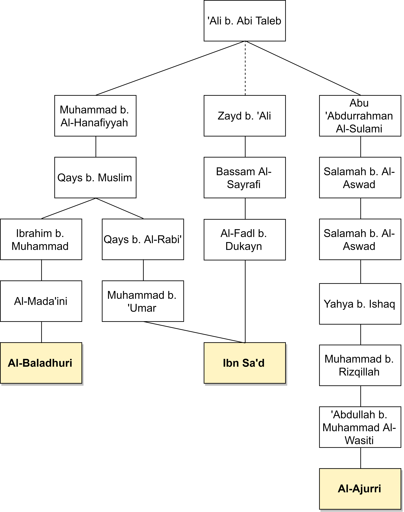

It should not be a surprise for one to find the earliest historical sources replete with praise of the companions of the Prophet by the Imams of the Twelvers. Such reports demonstrate the defective nature of the Twelver historical narrative, which is fundamentally based on the notion that Ahlulbait and the Sahabah embodied nothing but hatred, animosity and contempt towards each other. Rather, one finds a plethora of reports that authentically quote various members of the Prophet’s household praising and respecting the Sahabah. In this article, we shall evaluate an example of this phenomenon.
We shall primarily address this report in two regards:
- The report’s definite authenticity
- Later Shi’ite attempts to bypass the report and deflect its implications
With that being said, the report in question today is a hadith of ‘Ali b. Abi Taleb. In this hadith, ‘Ali enters upon ‘Umar as his body was wrapped and prepared prior to his burial, and he says: “I would not love to meet Allah with anyone’s record asides from this wrapped man’s record.”
This report does not come from a vacuum:’Umar b. Al-Khattab’s accomplishments during has reign as caliph were impressive and crucial to the spread of Islam to various parts of the world. ‘Umar similarly laid the administrative foundations to various government institutions that would later prove to be central. His role with the Prophet since the earliest days of Islam is well-kbown, and so are his numerous sacrifices. Thus, it is not a surprise that other companions of the Prophet wished to possess such feats and deeds in their records on the Day of Judgement.
Nevertheless, let us evaluate this report’s isnads, which were primarily transmitted by Ahlulbait, and then let us evaluate how the early Twelver community responded to this report.
Isnads to Ja’far Al-Sadeq → Al-Baqir → ‘Ali
Ironically, this report is transmitted by Ja’far Al-Sadiq himself. He transmitted it from his father, who quoted ‘Ali b. Abi Taleb. As seen in figure 1 below, this report is mutawatir (mass-transmitted) from Ja’far: over six of his companions transmitted it from him.
Figure 1. Diagram of isnads for this report from Ja’far Al-Sadeq, which he then transmitted from his father
What is further noteworthy is that several transmitters from Ja’far in this diagram were even declared reliable in Shi’ite sources. Wahib b. Khaled. for example, was endorsed by Al-Najashi (Al-Jawahiri 778). Anas b. ‘Iyyadh was endorsed by both Al-Tusi and Al-Najashi (Al-Jawaheri 776). Either way, this report would still be authentic to Ja’far due to the shear amount of direct and indirect corroborations.
Sources: Fada’il Al-Sahabah (‘Abdullah’s additions) #345, Fada’il Al-Sahabah (Al-Qati’i’s additions) #652, Al-Mutamannin by Ibn Abi Al-Dunya pg 58, Fada’il Al-Khulafaa’ Al-Rashidin by Abu Nu’aym #206, Al-Du’afaa’ Al-Kabir by Al-‘Uqaili 2:179, Al-Mustadrak by Al-Hakem #4523, Al-Ma’rifah wal-Tarikh by Al-Fasawi #2:745, Al-Tabaqat Al-Kubra 3:282, Ansab Al-Ashraf by Al-Baladhuri 10:444, Musannaf Ibn Abi Shaybah #32018
Other Isnads to Al-Baqir
Figure 1 presented the directly corroborated transmission from Ja’far Al-Sadeq, and it is indeed sufficient to demonstrate the report’s authenticity. Al-Sadiq, however, was not the only transmitter to transmit this report from his father. Rather, he was corroborated in his transmission by others as well. Figure 2, below, presents other authentic chains of transmission back to Al-Baqir:
{kind=link}
Figure 2. Diagram of isnads that further corroborate Al-Sadiq’s transmission from Al-Baqir
Sources: Al-Tabaqat Al-Kubra 3:282, Al-Athar by Abu Yusuf #952, Tarikh Al-Madinah by Ibn Shabbah 3:942, Fada’il Al-Sahabah (‘Abdullah’s additions) #346
Peripheral Isnads to Various Members of Ahlulbait
Figure 3, below, presents a few other isnads to Ahlulbait: Zayd b. ‘Ali b. Al-Husaim and Ibn Al-Hanafiyyah, who transmitted this report from ‘Ali b. Abi Taleb.
Figure 3. Diagram of peripheral isnads to other individuals from Ahlulbait
{kind=link}
Source: Ansab Al-Ashraf by Al-Baladhuri 10:429, Al-Tabaqat Al-Kubra 3:283, Al-Shari’ah by Al-Ajurri #1206
Discussion
A careful analysis of this report is sufficient to demonstrate that Ja’far Al-Sadiq and his father, Al-Baqir, were its pivotal and most prolific transmitters. This is apparent from the fact that they are the only individuals from whom this report is mass-transmitted. The report is also authentically ascribed to other individuals from Ahlulbait, such as Zayd b. ‘Ali and Ibn Al-Hanafiyyah, all of whom transmitted it from ‘Ali b. Abi Taleb.
Nevertheless, it is apparent that this report posed a problem to Twelver theology. Early Shi’ite polemicists thus varied in their reaction to this report as they attempted to deflect its implications.
Some early Shi’ites openly displayed their disapproval of this report as it was transmitted by Ja’far Al-Sadiq. In Sufyan b. ‘Uyaynah’s account, transmitted by Abu Nu’aym and Al-‘Uqaili’, the early (weak) Rafidi figure, Sadir b. Hakim, is quoted objecting to the report. After hearing it from Ja’far, Sufyan said:
I then heard Sadir Al-Sayrafi say: “His [Ali’s] record is greater than his [‘Umar’s] !” (Al-Asbahani 162)
In Al-‘Uqaili’s account, Sufyan further said: “I then raised my hand to smack his face, but Al-Hasan b. ‘Umarah prevented me and said: ‘leave him, for he is misguided.’ ” (Al-‘Uqaili 2:179)
In this account, Sadir clearly recognizes that the implications of this report fundamentally oppose his preconceptions regarding ‘Umar b. Al-Khattab; thus, he immaturely grunts out loud in objection to its content in a manner which (I suppose) resembled that of a disgruntled preschooler. No arguments were provided to address the actual content of the report; rather, it seems as though Sadir was satisfied with simply parroting the beliefs of the Rafidi community at the time in response to this hadith.
Other Shi’ite polemicists attempted to provide a more nuanced response to this report. Twelver theologian, Al-Mufid (d. 413), more than 150 years after the compilation and mass-transmission of this report in classical Sunni works, attempted to address this hadith. In his book, Al-Fusul Al-Mukhtarah, he quoted Hisham b. Al-Hakam (d. 179) as he was asked about the hadith. It must be noted, however, that Al-Mufid did not list an isnad for his quote from Hisham; thus, there is a disconnection in its transmission that is more than two centuries long. Al-Mufid said:
Hisham was once asked about the report transmitted by the Sunnis where the commander of the faithful, during the processions after ‘Umar’s death, entered upon ‘Umar as he was wrapped and said: “Indeed, I wish to meet Allah with the record of this man.”
Hisham thus said: “This hadith is not authentic, and its isnad is unknown. It was merely transmitted through storytellers and men of the streets. Even if it were authentic, its meaning would be known. [It would be referring to] the instance when ‘Umar conspired with Abu Bakr, Al-Mughirah Salem, and Abu ‘Ubaydah to author a document among themselves in which they all agreed: if the Prophet were to die, they would not allow any of his family members to inherit him, nor would they allow anyone from his household to assume his position of leadership after him. This document was ‘Umar’s, since he was their backbone at the time. This is the document the commander of the faithful prayed to possess when he met Allah: it was so that he could confront ‘Umar and cite it as evidence against him in Allah’s presence.” (Al-Mufid 90)
Al-Mufid’s attempt to dismiss this report is futile for several reasons:
- He does not mention an isnad to this alleged response of Hisham. Thus, there is a ~200 year-long disconnection in its transmission, and this entire quote is worthless.
- The response provided demonstrates Hisham and Al-Mufid’s ignorance in hadith, as they claimed that the report was not authentic and that its isnads were unknown.
- Hisham is then quoted attempting to reconcile the report with Twelver theology by reinterpreting it and providing a counter-narrative.
Point 1 should be self-evident. Regarding point 2, the report is mass-transmitted from Ja’far Al-Sadeq, and several of Ja’far’s students in the diagram were even declared reliable in Twelver sources! Thus, this dismissal of the report’s authenticity by Hisham simply is a dishonest ad hoc appeal (assuming Hisham actually uttered this statement cited by Al-Mufid.)
Hisham and Al-Mufid’s attempt to dismiss the report’s authenticity ironically backfires on them. This is because other Shi’ite polemicists fabricated reports that reexplained the hadith in question today according to the Hisham’s “alternative explanation.” In his book, Ma’ani Al-Akhbar, Al-Saduq said:
Muhammad b. ‘Ali Majilawayh informed us, from his uncle Muhammad b. Abi Al-Qasem, from Ahmed b. Abi ‘Abdillah Al-Barqi, from his father, from Muhammad b. Sinan, from Mufaddal b. ‘Umar; he said: I asked Abu ‘Abdillah (as) about the meaning of the commander of the faithful’s statement when he looked at the second one (‘Umar) as he was wrapped and said: “I would not love to meet Allah with anyone’s record asides from this wrapped man’s record.”
Abu ‘Abdillah said: “He was referring to the document that was authored inside the Ka’bah.” (Al-Saduq 412)
This cop-out is diametrically opposed to Hisham b. Al-Hakam’s cited claim that the report was not authentic. Rather, Al-Sadiq quoted Ja’far Al-Sadiq providing an explanation of this report that can be reconciled with Twelver theology. Ja’far, however, is not quoted dismissing the report’s authenticity. He is quoted claiming that ‘Ali was referring to the same document mentioned in Hisham b. Al-Hakam’s answer.
Unsurprisingly, this alleged statement of Ja’far Al-Sadiq is a baseless fabrication:
- Muhammad b. ‘Ali Majilawayh is unknown. (Al-Jawaheri 559)
- Muhammad b. Khaled Al-Barqi actually is unknown. His presense in Tafsir Al-Qommi is not tantamount to an endorsement, due to the inauthenticity of Al-Qommi’s preface to his tafsir
- Muhammad b. Sinan is unreliable. (Al-Jawaheri 535)
- Al-Mufaddal b. ‘Umar was very weak.
- Al-Najashi described him saying: “A Kufan who is corrupt in his madhab, distorted in his transmission. He should not be considered. It was said that he was a Khattabi. I have mentioned several works of his, none of which can be relied upon. (Al-Khoei 19:317)
- Ibn Al-Ghada’iri said: “He is weak and incoherent, elevated in his speech, and a Khattabi. A lot has been falsely ascribed to him, and the extremists have severely depended on his transmission. It is not permissible to write his hadith.” (Al-Khoei 19:318)
A similar report can be found in the alleged book of ‘Abbad b. Ya’qub, where he transmitted a similar report from Ja’far Al-Sadiq.
In his book, ‘Abbad is quoted transmitting it from Al-Husain and Zaid b. ‘Ali, from Yahya b. ‘Abdillah b. Al-Husayn, from Ja’far b. Muhammad (as). (Al-Usul Al-Sittat ‘Ashar 18)
- ‘Abbad’s book was exclusively transmitted by the notorious forger, Abu Saminah Muhammad b. ‘Ali b. Ibrahim Al-Sayrafi. (Al-Jawahiri 551)
- Zaid b. ‘Ali b. Al-Husayn b. Zaid is unknown (Al-Jawaheri 238)
- Al-Husain b. Zaid b. ‘Ali b. Al-Husain is unknown. (Al-Jawaheri 169)
These two baseless reports present an early Shi’ite attempt to appropriate this statement of ‘Ali and transform it into a condemnation of ‘Umar. These later fabricated traditions ascribed to Ja’far further mischaracterize the report’s context, since ‘Ali is quoted further praying for ‘Umar in multiple authentic redactions of the hadith.
Conclusion
Al-Sadiq, Al-Baqir and other members of Ahlulbait authentically quoted ‘Ali b. Abi Taleb, as he was in the presence of ‘Umar’s body, saying: “I would not love to meet Allah with anyone’s record asides from this wrapped man’s record.” As evident, the apparent meaning of this report conflicts with Twelver theology. Early Shi’ite polemicists thus varied in their reaction to this report’s content. Some, such as Sadir Al-Sayrafi, simply objected to the report without responding to its content. Others, such as Al-Mufid and Hisham b. Al-Hakam, attempted to dismiss its authenticity. Other polemicists forged reports that quoted Ja’far Al-Sadiq appropriating the text and transforming its apparent meaning into a condemnation of ‘Umar!
It is sufficient to say, however, that all of these attempts to bypass and deflect the report’s implications are futile. Similarly, these polemical cop-outs demonstrate how later Twelver Shi’ite transmitters and polemicists misquoted the imams and distorted their statements and beliefs in an attempt to bolster the Twelver narrative, which is fundamentally based on the presentation Ahlulbait and the majority of the Sahabah as vile enemies. Thus, when a mass-transmitted authentic report presents an Imam praising a Sahabi who is hated by the Shia, Twelver polemicists will (unsurprisingly) try to find a cop-out to bypass its implications.
Behold! how they invent lies against Allah! Sufficient of a blatant sin is that alone! [Quran 4:50]
And Allah is the Witness of Abu Al-‘Abbas
Sources
Al-Asbahani, Abu Nu’aym. Fada’il Al-Khulafaa’ Al-Rashidin. Edited by Saleh Al-‘Uqail, 1st ed., Dar Al-Bukhari, 1417.
Al-Jawaheri, Muhammad. Al-Mufid min Mo’jam Rijal Al-Hadith. 2nd ed., Al-‘Ilmiyyah Al-Fil, 1424.
Al-Khoei, Abu Al-Qasem. Mo’jam Rijal Al-Hadith. 5th ed., Markaz Nashr Al-Thaqafah Al-Islamiyyah, 1992.
Al-Mahmudi, Diya Al-Din. Al-Usul Al-Sittah ‘Ashar min Al-Usul Al-Awwaliyyah, ed. Neamatullah Al-Jalili and Mahdi Ghulam-Ali, 2nd ed., Dar Al-Shabstari, 1405.
Al-Mufid, Muhammad. Al-Fusul Al-Mukhtarah. Edited by ‘Ali Mir Sharifi, 2nd ed., Dar Al-Mufid, 1993.
Al-‘Uqaili, Muhammad. Al-Du’afaa’ Al-Kabir. Edited by AbdulMu’ti Qal’aji, 1st ed., Dar Al-Maktabah Al-‘Ilmiyyah, 1984.
Ibn Babawayh, Al-Saduq. Ma’ani Al-Akhbar. Edited by Akbar Al-Ghifari, Intisharat Islami, 1361.
Leave a Reply